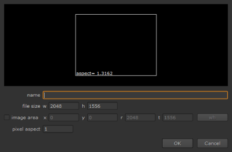

When you start a new script in Nuke, you need to set up a full-size format. The full-size format determines the size of the image that you get from any disconnected node inputs. It also sets the default size of any script-generated elements, such as Constants and ColorBars.
NOTE: The full-size format does not affect the format of the elements you read into your script. Nuke is resolution-independent, which means it respects and keeps the resolution of your images. It won’t automatically crop or pad elements to match the project settings.
If you want elements you read in to conform to the project settings, you can do this manually using the Reformat node. For more information, see Reformatting Image Sequences.
The full-size format is also used to calculate proxy scaling if a proxy format is used. For more information on the proxy mode and proxy formats, see Proxy Mode.
| 1. | If it’s not already open, select Edit > ProjectSettings (or press S) to display the Project Settings panel. |
| 2. | From the full size format dropdown menu, select the resolution for the final output of rendered images. If the format you want to use is not in the menu, select new. The New format dialog displays. |

In the name field, enter a name for the new format.
In the file size fields, define the width and height of the format.
If you like, you can also define additional information, such as offsets and pixel aspect ratio.
Click OK to save the format. It now appears in the dropdown menu where you can select it.
|
|